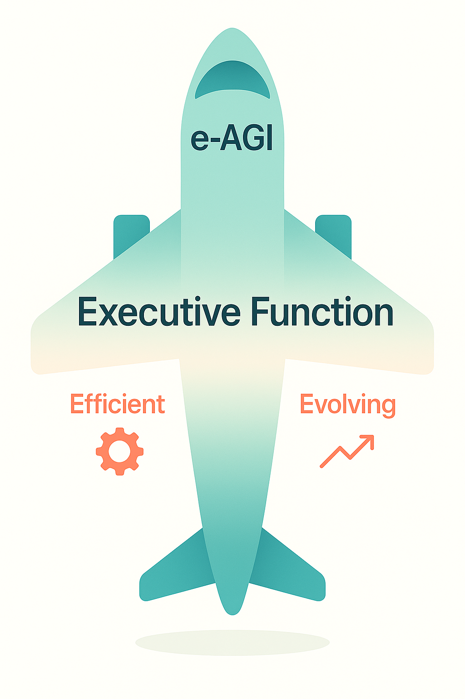

Efficient AI
Model Re-architecture & Layerwise-aware Optimization
This direction focuses on enhancing the efficiency and adaptability of LLMs and MLLMs in the post-training stage. We redesign network topologies and introduce layer-aware optimizers, pushing the envelope of speed and memory efficiency without sacrificing accuracy.
Executive Function
Multimodal CoT, Proactive Reasoning, Global Workspace
This direction focuses on enhancing the reasoning capabilities of intelligent agents, evolving from traditional linguistic CoT to multimodal CoT, and from passive responses to proactive reasoning. We study how agents can plan ahead, incorporate world knowledge, and reason across modalities via a lightweight global workspace that coordinates perception, memory, and planning for robust executive control.
Evolving AI
Hybrid Memory & Continual Learning
This direction focuses on developing continual learning systems based on hybrid memory architectures that unify long-term and working memory, enabling adaptive knowledge acquisition while mitigating catastrophic forgetting. These systems support in-situ model evolution, temporal reasoning, and robust performance under non-stationary conditions.

A single Executive Function aircraft
propelled by Efficiency & Evolution